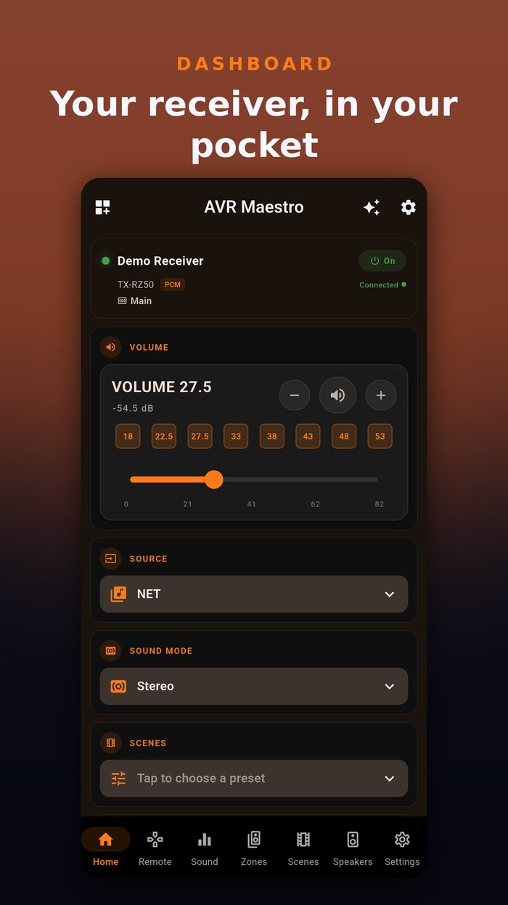

The remote app for Onkyo, Pioneer and Integra AV receivers.
Control power, volume, inputs and listening modes, then go further: Dirac Live, AccuEQ, channel levels and every zone, from your phone, tablet or computer. It speaks your receiver's own eISCP network protocol and shows only the controls your receiver reports. For Denon and Marantz, see AVR Maestro.

Screenshots from the pre-release build, connected to a demo receiver. Tap any to zoom.
Nothing on screen is a guess: the app shows only the controls your receiver reports.
Every mode your receiver offers, grouped into Movie, Music, Game and Pure and matched to the audio format of the source.
Dirac Live filter slots, AccuEQ, MCACC memory presets and Audyssey, on the receivers that carry them.
Dialog Enhancer, Late Night, Dolby Volume, Center Level and IntelliVolume.
Per-channel trims, subwoofer and LFE level, bass, treble and the tone extras your receiver reports.
Power, volume, input and mute for Zone 2, Zone 3 and Zone 4, independent of the main zone.
A D-pad, transport controls, a TV remote over HDMI-CEC and system settings such as HDMI output, 12V triggers and the dimmer.
FM/AM tuning, direct frequency entry and up to 40 presets with the names your receiver stores.
Save input, volume, listening mode and channel levels, then recall them with one tap, even from a home-screen widget.
Track details and transport for the sources that report them.
Your phone's volume buttons control the receiver while the app is open.
A dashboard of widgets you arrange, Light, Dark and AMOLED themes, and your own accent color.
AVR Maestro talks to your receiver directly over your local network, with no cloud service in between.
Turn on network control (eISCP) on your Onkyo, Pioneer or Integra receiver.
Open the app on a phone, tablet or computer on the same local network as the receiver.
The controls you see depend on what your receiver supports.
AVR Maestro talks to your receiver directly over your local network, with no cloud service in between.
Commands go straight from your device to your receiver over your local network.
No account and no ads.
Crash reports and usage statistics go to Firebase, linked to a random ID, not your name, to help fix bugs and improve the app.
Everything you need to know about AVR Maestro for Onkyo Pioneer.
AVR Maestro is an independent app by MiyaraHub Technologies LLC. It is not affiliated with, authorized, endorsed or sponsored by Onkyo, Pioneer, Integra or any of their parent or affiliated companies.
All product and company names are trademarks or registered trademarks of their respective owners and are used for identification and compatibility only.
AVR Maestro for Onkyo Pioneer is in pre-release. This page will add App Store, Google Play and Microsoft Store links once each listing is live.